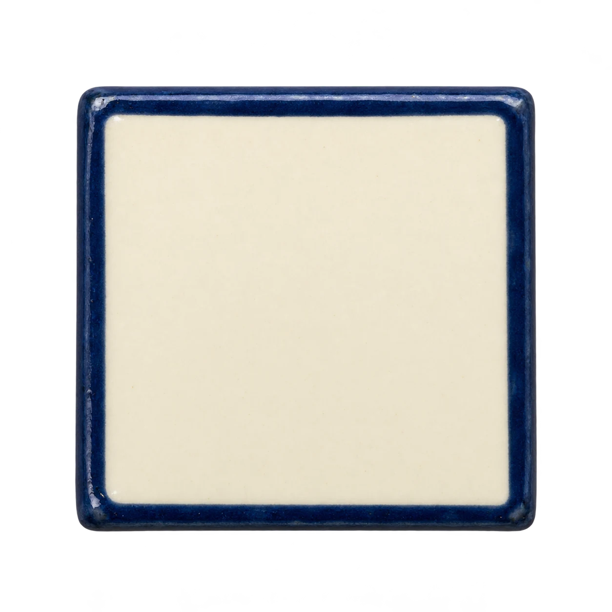

A place to
cross paths.
An island of supplied answers. Follow a clue, meet its neighbours, and see what happens when one shared letter changes.
answers placed
in this fixture
A note from Crosslet
Preparation100%
Garden continues sideways. Select any clue to reveal its cells. A shared cell tap cycles its crossing answers.

One cell.
Two promises.
An authored crossword fixture, not a puzzle solver. IDs label clues, not conventional newspaper numbering. Switching fixtures clears the wrong-letter sample.